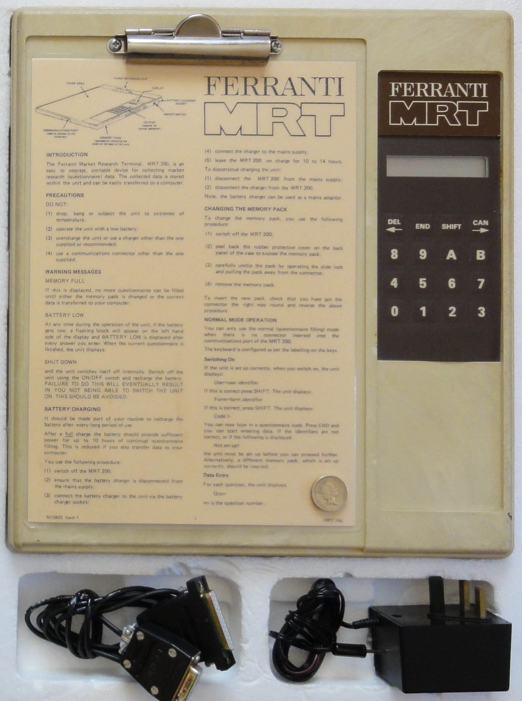

Ferranti MRT-100 / MRT-200
A clipboard-and-pencil survey, digitized into a hand-held data logger so the computer never intimidates the interviewee

Overview
The Ferranti MRT-100 (1983) and MRT-200 were the commercial versions of the Questronic, a programmable hand-held survey data logger developed at the University of Sheffield by geographer Gwyn Rowley and electronics engineers Keith Barker and Vic Callaghan. The device was engineered to feel like a familiar clipboard rather than a computer, in the explicit belief that computers frightened ordinary people. A printed paper questionnaire clips onto the board, the interviewer reads each question aloud, and as the interviewee answers, the interviewer presses the corresponding key on a membrane keypad beside the page. Each keypress records the answer, advances through branching or multi-choice logic, and sounds a beep as confirmation. The machine is a one-handed, battery-powered data logger built to disappear into a face-to-face human ritual.
Because responses were captured digitally at the point of collection, the bottleneck of keypunching was eliminated: completed surveys were uploaded via a portable telephone modem, cutting the delay between field interview and processed results to almost nothing. The MRT is frequently cited as among the first application-specific handheld computers, and it was adopted for face-to-face market and social research in the early 1980s. Its place in the museum is the interaction model — a computer shaped and used as an ordinary pad of paper so that the technology recedes from the social encounter.
Deep dive
The defining move is a re-mediation of the paper survey. The interviewer physically holds a device that looks and feels like a clipboard; the paper questionnaire is clipped on and read aloud; answers are recorded by keypress on the membrane pad beside the page. The machine preserves the natural rhythm of an interview while capturing the data at the moment of the answer, with a beep confirming each recorded response.
The MRT was not a general computer; it was purpose-built to run survey instruments with branching and multi-choice question logic. This single-purpose design is a strong early example of a computer engineered for one social workflow, decades before the smartphone.
A genuinely novel step for the early 1980s: completed surveys were uploaded via a portable telephone modem, so processed results could be produced almost immediately rather than days later through keypunching. This closed the loop between face-to-face data collection and computation.
Rowley, Barker and Callaghan's published design rationale (Professional Geographer 1985; European Journal of Marketing 1986) was that technology intimidated interviewers and interviewees alike. The clipboard form factor was the answer — a machine designed to be felt as a pad of paper. This contrasts instructively with the museum's Scantron OMR reader, which made the printed bubble sheet the shared token; the MRT instead made the computer itself mimic the paper and pencil.
The MRT-100/200 were adopted for commercial face-to-face market research in the UK and beyond, and the Questronic/MRT lineage stands as an important, largely forgotten ancestor of mobile field data capture.
Team & pioneers
- Gwyn Rowley. Geographer, University of Sheffield; co-developer of the Questronic/MRT.
- Keith Barker. Electronic engineering, University of Sheffield; co-developer.
- Vic Callaghan. Electronic engineering, University of Sheffield; co-developer, later University of Essex. His site preserves prototype photos and the MRT-200 manual.
- Ferranti Plc. UK electronics manufacturer that commercialized the Questronic as the MRT-100/200.